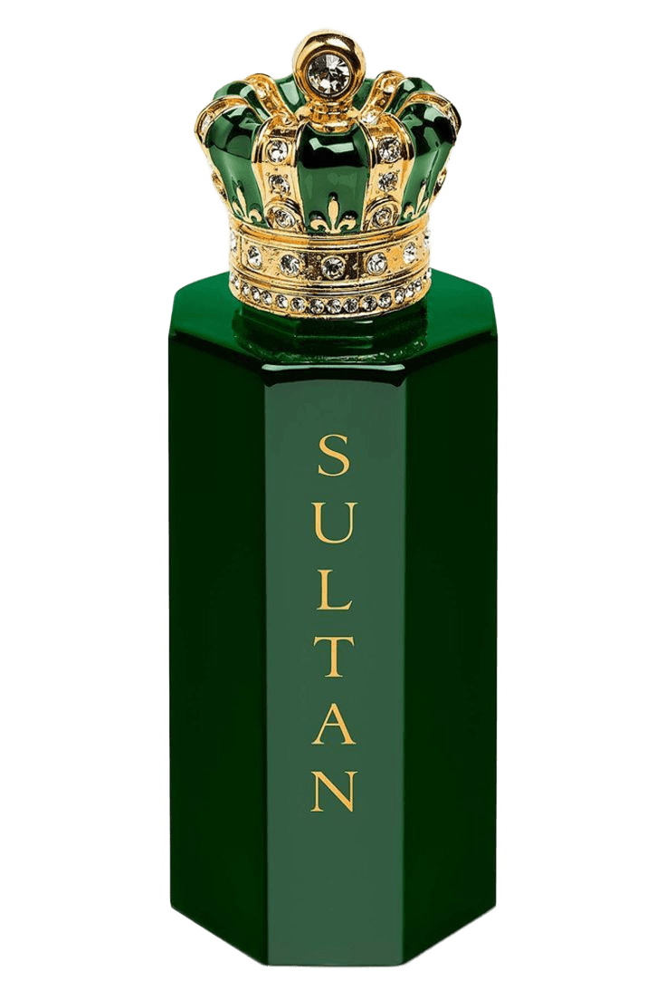

اسم المنتج
صبايا
وصف المنتج
عطر عود غني وخشبي، يمزج بين عبير العود الفاخر ولمسات من الأخشاب النادرة، ليخلق تجربة عطرية لا تُنسى تعبر عن الأصالة والفخامة. عطر مثالي للمناسبات الخاصة ولمن يقدرون الجودة والتميز.
كمية العبوة:
100 مل e
السعر:
4600 ريال يمني
طريقة الاستعمال:
يُرش العطر على نقاط النبض، مثل المعصمين وخلف الأذنين، للحصول على أفضل النتائج ودوام الرائحة. تجنب رشه مباشرة على الملابس الفاتحة.